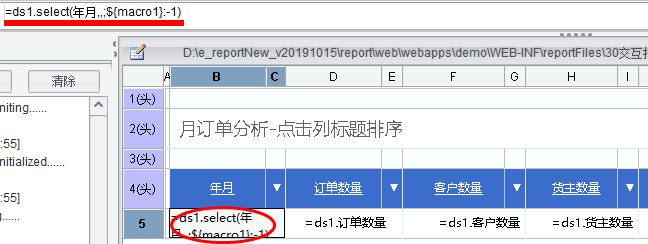
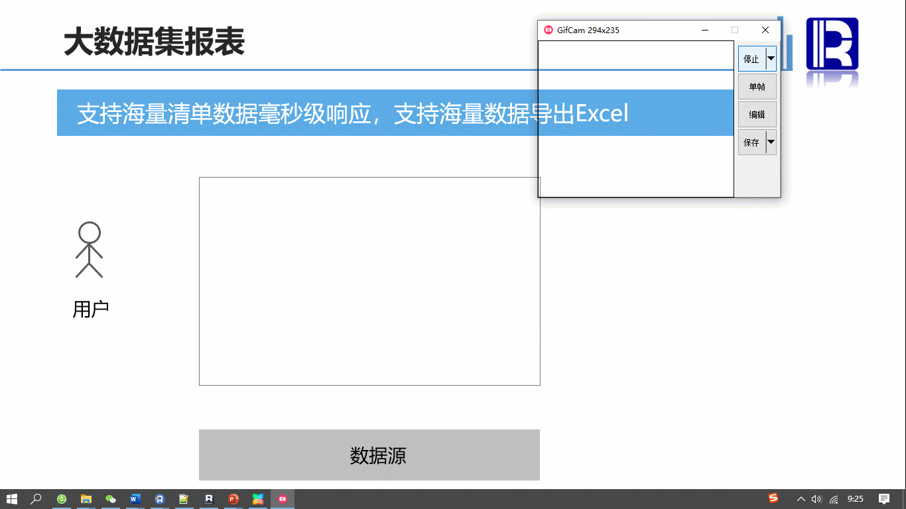
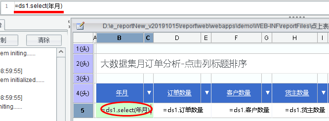
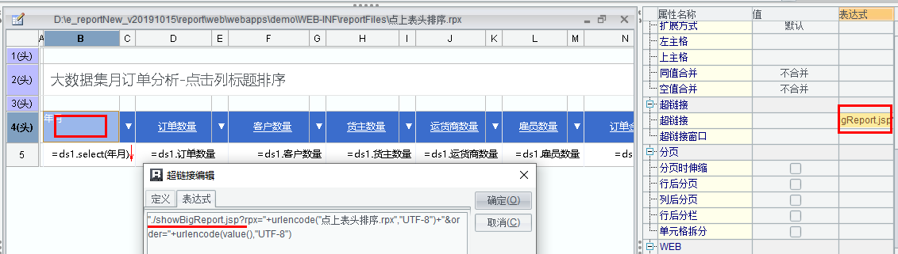
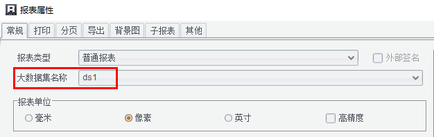

在润乾官方在线 demo的 "交互报表" 中，有介绍 "点击表头排序" 的报表案例，该报表针对普通统计类报表。对于使用大数据集的报表，当按照此方式改造时发现排序没起作用或仅对第一页或前几页排序，后面的都没成功。
要想了解啥原因导致？就需要分析该报表的做法及知道大数据集的取数原理。
首先，来分析下在线 demo“点击报表排序”的做法。
润乾报表中实现排序的方式有两种：
1、 借助数据集 sql，即 order by …
2、 数据集函数
都有排序表达式 sort_exp 或 order_exp.
示例中用的是第 2 中方法，因普通报表是一次性把所有数据取到内存，所以数据集函数排序是对所有数据的排序，点表头实际就是按照某字段对所有数据排了一次序，也就没啥问题了。

接下来看大数据集报表的取数原理。

简单来说，大数据集取数原理是为了避免一次取大量数据导致内存溢出，采取了游标方式边取边呈现的方案（其中取出的数据缓存在磁盘文件，前端呈现从缓存文件读取）。
了解了该方案后，我们就清楚了，采用排序的第 2 中方案，显然只能针对一部分数据排序后呈现，并不针对所有数据。
解决方案也就明确了：要想实现大数据集报表的表头排序，必须用第 1 中方法。
改造：
1、 去掉数据集函数排序

3、 修改超链接
因普通报表和大数据集报表用的 jsp 不同，所以要改一下。
以 B4 为例，把 showReport.jsp 改为 showBigReport.jsp

4、 报表属性内把数据集改为大数据集

通过以上 4 步，就可以完成点击表头排序功能从普通到支持大数据集。另外如果想实现升降序切换也很简单，除了点表头传排序的字段名外，再传一个 asc 或 desc 的排序方式拼到 SQL 中即可。只要知道了原理及方案，改造起来相对轻松。
Ps："点击表头排序" 的示例报表，在设计器 demo 内也有，可在 "交互报表" 目录获取。